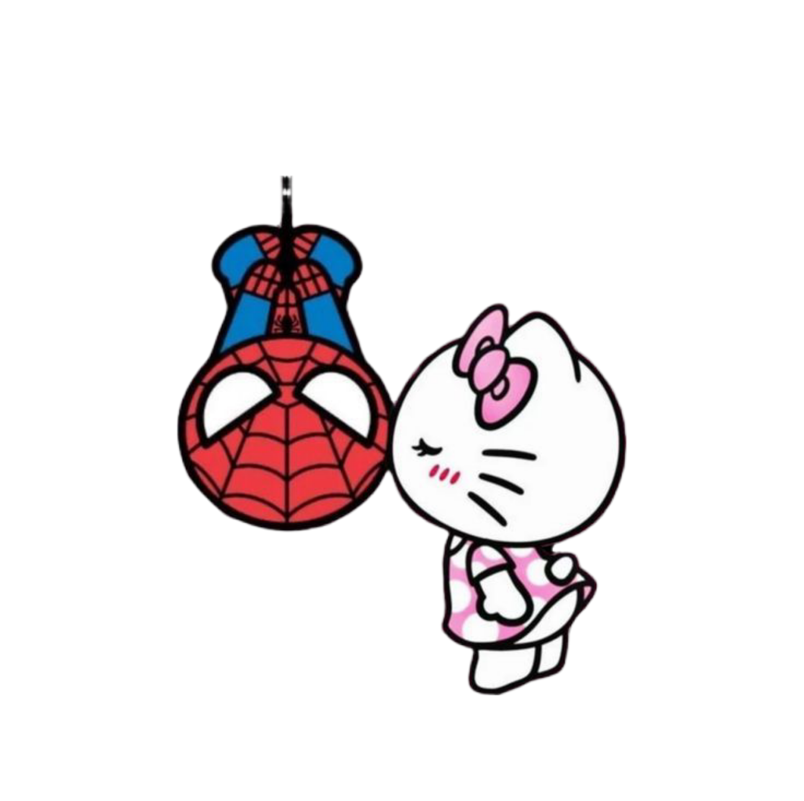
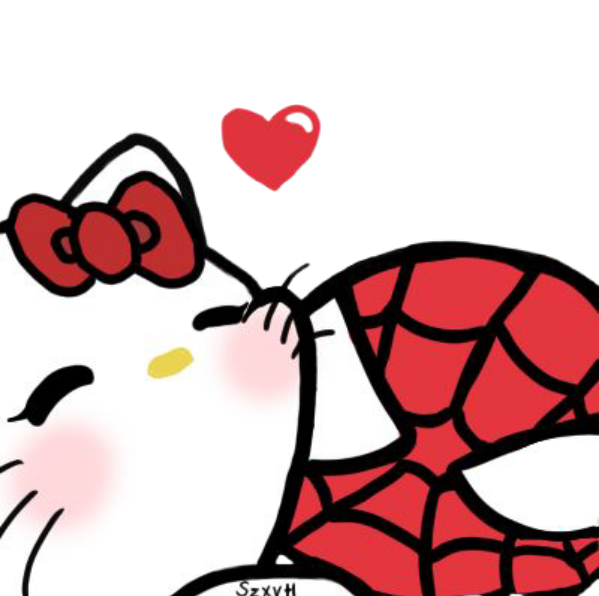
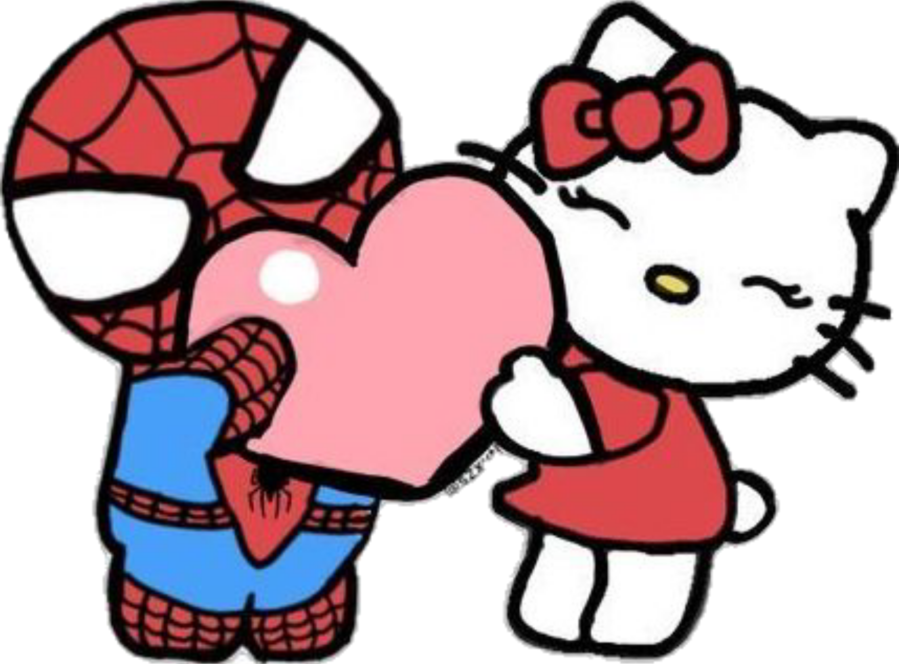
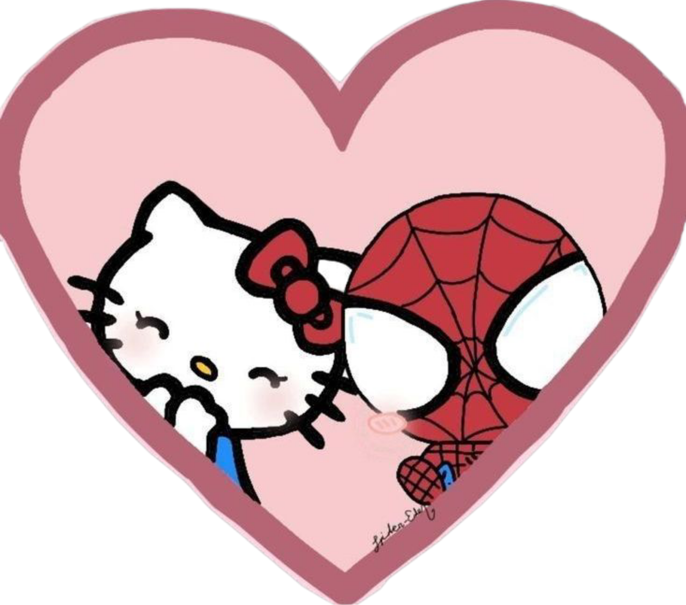

Para Minha Princesa Aleh
Querida Aleh,
Hoje comemoramos 1 mês de namoro! Mesmo que nosso amor tenha nascido no mundo virtual, cada conversa, cada risada e cada momento compartilhado me faz sentir mais próximo de você do que nunca, lembro da nossa primeira conversa, quando trocamos mensagens sobre nossos hobbies favoritos, e como aquilo evoluiu para horas intermináveis de conversas profundas sobre sonhos, medos e aspirações, você me cativou desde o início com sua inteligência afiada e seu senso de humor único, que sempre me faz sorrir mesmo nos dias mais difíceis.
Você é a minha princesa, a luz que ilumina meus dias. Não vejo a hora de transformar esse "web namoro" em algo ainda mais real e eterno, Obrigado por ser tão especial e por me fazer tão feliz, cada vez que vejo notificações de mensagens suas, meu coração acelera como se fosse a primeira vez, adoro como você compartilha detalhes do seu dia a dia, desde o café da manhã até os pequenos detalhes da escola, esses momentos me fazem sentir que estamos construindo algo sólido, mesmo à distância.
Te amo mais do que palavras podem expressar, vamos celebrar muitos mais meses, anos e uma vida inteira juntos! Imagino nos caminhando de mãos dadas por uma praia ao pôr do sol, ou simplesmente assistindo a um filme abraçados no sofá, você me inspira a ser uma pessoa melhor todos os dias, com sua gentileza infinita e sua força interior. Lembro de quando a gente era apenas amigos , mas eu percebi que você 🫵, era a garota perfeita, e a que sempre pedi a Deus, vc é um diamante em meio a uma geração cheia de cobre
Minha princesa, desde que você entrou na minha vida, tudo parece mais colorido e cheio de possibilidades, adoro como você me entende sem que eu precise explicar muito, e como nossas conversas fluem naturalmente, como se nos conhecesemos há anos, nesse mês que passou, aprendi tanto sobre você: seus gostos musicais, os livros que te emocionam, os filmes que te fazem rir e principalmente chorar, cada descoberta é como um presente, e eu mal posso esperar para desvendar mais camadas da sua personalidade encantadora.
As vezes, fecho os olhos e imagino seu sorriso, baseado nas fotos que você me envia, e isso me aquece o coração, você é minha musa,minha princesa, minha confidente, minha melhor amiga e agora, minha namorada, esse título me enche de orgulho e alegria, obrigado por confiar em mim, por compartilhar seus segredos e por me permitir entrar no seu mundo, eu prometo cuidar do seu coração com todo o carinho que ele merece.
nesse curto período, já criamos memórias inesquecíveis: as brincadeiras internas que só nós entendemos, a playlist que montamos juntos(inclusive eu tinha esquecido dela), os áudios que vc me envia, sua voz doce que me encanta, cada um desses instantes reforça o quanto nosso amor é real, mesmo que virtual por enquanto, eu sinto sua presença em cada notificação, em cada "bom dia" e "boa noite" que trocamos.
Minha princesa, você me faz sonhar com um futuro onde a distância não existe mais, planejo viagens para te ver, momentos onde poderei te abraçar de verdade e sentir o calor do seu corpo, até lá, continuarei a te amar com toda a intensidade possível através das palavras e das promessas que fazemos um ao outro, você é o meu tudo, a razão pela qual acordo motivado todos os dias.
Lembro da primeira vez em que eu te chamei de princesa, vc ficou toda bestinha KAKAKKA, Você me ensina a ser paciente, a valorizar os pequenos gestos e a acreditar no poder do amor à distância.
Princesa, nesse 1 mês, você transformou minha rotina em algo mágico, as noites solitárias viraram oportunidades para te conhecer melhor, e os dias corridos ganham um brilho extra com suas mensagens carinhosas, eu te admiro por sua determinação, sua beleza interior e exterior, e pela forma como você ilumina a vida de quem está ao seu redor, incluindo a minha.
Eu te amo de uma forma que transcende o tempo e o espaço, vamos continuar construindo essa história linda, página por página, até que possamos escreve-la juntos no mundo real, mal posso esperar pelo dia em que direi isso tudo olhando nos seus olhos, até lá, saiba que você é o centro do meu universo.
E para celebrar esse marco, prometo continuar sendo o melhor namorado que posso ser: atencioso, carinhoso e dedicado, e chato também (do meu jeito engraçadinho), vamos planejar mais aventuras virtuais e reais, criar mais memórias e fortalecer nosso laço dia após dia, você merece o mundo, e eu farei o possível para te dar isso.
Minha princesa Aleh, obrigado por esse mês incrível, que venham muitos mais, cheios de amor, risadas e cumplicidade, eu te amo infinitamente.
Erick